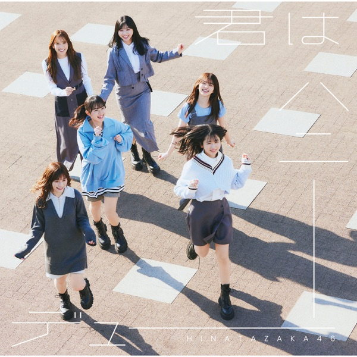

サカミチ
サカミチ恋とあんバターこいとあんばたー

初収録リリース「君はハニーデュー」のジャケット
フォーメーション
上が後列、下が前列です。色付きがセンター。（公式発表に基づく）
 平尾帆夏
平尾帆夏 森本茉莉
森本茉莉 河田陽菜
河田陽菜参加メンバー（4名）
この曲が披露されたライブ（4件）
同じリリースの曲
君はハニーデュー、錆つかない剣を持て！、どこまでが道なんだ？、恋とあんバター、夜明けのスピード、雨が降ったって、僕に続け

初収録リリース「君はハニーデュー」のジャケット
上が後列、下が前列です。色付きがセンター。（公式発表に基づく）
平尾帆夏森本茉莉河田陽菜君はハニーデュー、錆つかない剣を持て！、どこまでが道なんだ？、恋とあんバター、夜明けのスピード、雨が降ったって、僕に続け